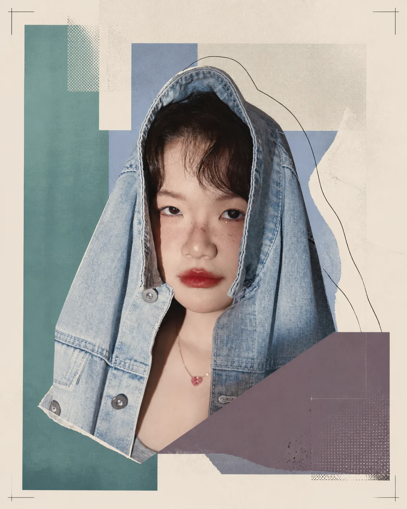

2026.03—04总牵头 / CITY TOUR
「新华时光」
城市巡展
从方案、预算、跨部门协同到供应商执行全程牵头，以 39.79 万元投入完成五区核心商场大型品牌巡展。
- 75.7万+
- 深度触达
- 110万+
- 传播曝光
- 近1000条
- 潜客线索
以预算、资源和时间为边界，把传播目标转译成可协作、可落地、可复盘的项目。
02—08从方案、预算、跨部门协同到供应商执行全程牵头，以 39.79 万元投入完成五区核心商场大型品牌巡展。
14 天落地，以 NPC 互动串联公交场景、线下互动与线上内容。
252万+ 品牌曝光统筹前中后期内容，并整合主流媒体及地铁广告资源。
300+ 客户深度触达负责传播、内容包装、媒体公关与供应商执行。
近 500 人参与